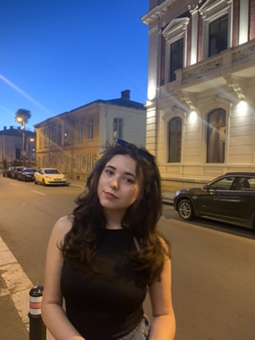

Comşa Iuliana Violeta
St Ion dragalina nr 102, Amara, Ialomita

Education
University POLITEHNICA of Bucharest
Bachelor of Computer Science 2021 - 2025(expected)
Relevant Coursework: Operating System, Data Stuctures, Numerical Methods, Object-Oriented Programming,
Algorithm Design and Analysis, Parallel and Distributed Algorithms, Computer Graphics
- Graduated from ”Mihai Viteazul” National College, Slobozia 2017 - 2021
- Baccalaureate grade: 9.85
Skills
Technical Skills
- Programming languages(Medium level): C, Java, Python, C++
- Programming languages(Basic level): Bash, D, Racket, Haskell
Soft Skills
- Adaptability
- Communication skills
- Highly organized
- Hard working
- Critical thinking
Notable projects
- Works with PPM and PGM images and has a Command Line Interface that supports several parameters and
can read and write plain or binary files.
- Empowers users to rotate, crop, and apply filters to user-defined areas of an image, addressing a spectrum of
editing requirements
- Developed a hierarchical file/folder system that can be manipulated through bash commands.
- Provide users with the ability to navigate, create, delete, and manipulate files and folders within the system.
- Involves developing a Command-Line Interface (CLI) for a library’s database, aimed at efficiently managing a
collection of books and user information.
- Implemented clear and concise commands for tasks such as searching for books, managing user accounts, and
handling book borrowing transactions
- Employed a generic hashtable as the core data structure, enhancing versatility and adaptability in handling
both book and user data
- Implementing a simple backend of a platform specific to viewing movies and series in which i used design
patterns to provide robust solutions for essential functionalities, ensuring a seamless user experience.
- Engineered a secure and scalable authentication system that seamlessly integrates user registration, login, and
logout functionalities.
- Simulates an architecture in which the Dispatcher, functioning as the load balancer, is tasked with receiving
incoming tasks from various sources.
- Hosts are tasked with executing these allocated tasks, prioritizing them as necessary and preempting less critical
tasks when required.
Extra-curricular activities
Python Fundamentals
- Attended a course at the Cisco Network Academy, specializing in the Python programming language, obtaining a
certificate attesting the ability to accomplish coding tasks related to the basics of Python. (2020)